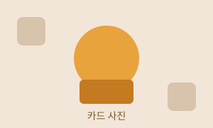

바다의 지도
13단원 · Grid 와 반응형
13단원 마무리입니다. 모바일 우선이라는 만드는 순서를 배우고, flex + grid + 미디어쿼리를 합쳐 카드 목록이 1단 → 2단 → 3단으로 바뀌는 페이지를 처음부터 끝까지 만듭니다. F12 → Ctrl+Shift+M 을 켜 두고 폭을 바꿔 가며 읽으세요.
미디어쿼리 밖에 쓴 CSS 를 좁은 화면용으로 삼는 것입니다.
그리고 min-width 로 "넓어지면 이렇게 더 해라" 를 덧붙입니다.
기억할 한 문장
미디어쿼리 밖은 좁은 화면용, min-width
안은 넓어졌을 때 덧붙이는 것입니다.
✏️ 직접 해보기 1 — 개념03 파일을 열어 .mq-cards 규칙을 찾아보세요.
기본이 1fr 이고 min-width 로 칸을 늘렸습니다.
그 파일도 이미 모바일 우선으로 쓰여 있었다는 것을 확인하세요.
max-width 로 만들어도 결과는 똑같습니다. 그런데도 min-width 를 권하는 이유가 네 가지 있습니다.
실제 결과 1 — 모바일 우선으로 쓴 카드 목록
실제 결과 2 — 데스크톱 우선으로 쓴 같은 카드 목록
두 방식 중 하나가 틀린 것이 아닙니다. 이미 만들어진 오래된 사이트를 고칠 때는 데스크톱 우선으로 쓰인 CSS 를 자주 만납니다. 새로 만들 때 모바일 우선을 고르라는 이야기입니다.
✏️ 직접 해보기 2 — 기기 툴바로 폭을 600 에 맞춘 뒤,
위 두 상자가 정말 같은 모양인지 확인하세요.
그다음 .dt-first 의 max-width: 899px 를
900px 으로 바꾸고 폭 900 에서 무슨 일이 생기는지 보세요.
아무 조건 없이 세로로 한 줄씩 쌓는 것부터 만듭니다. 미디어쿼리는 아직 한 줄도 안 씁니다.
실제 결과 — 어떤 폭에서도 1단
✏️ 직접 해보기 3 — .step-one 의 gap: 10px 을
gap: 0 으로 바꿔 보세요. 카드가 서로 붙습니다.
확인했으면 되돌리세요.
조건을 하나 붙입니다. 바꾸는 줄은 딱 한 줄입니다.
실제 결과 — 1단 또는 2단
✏️ 직접 해보기 4 — 기기 툴바로 폭을 599 와 600 으로 번갈아 맞춰 보세요. 1px 차이로 1단과 2단이 갈립니다.
조건을 하나 더 아래에 붙입니다. 순서를 지키는 것이 여기서 중요해집니다.
실제 결과 — 1단 → 2단 → 3단
✏️ 직접 해보기 5 — .step-three 의 두 미디어쿼리 순서를
서로 바꿔 보세요(900 을 위로, 600 을 아래로). 폭 1280 에서 몇 칸이 되는지
확인하고 이유를 설명한 뒤 되돌리세요.
칸 수만 바꾸면 반쪽입니다. 메뉴 방향과 글자 크기도 화면에 맞춰야 합니다. 여기서 12단원 flex 가 다시 나옵니다.
실제 결과 — 머리말과 메뉴
✏️ 직접 해보기 6 — .mf-nav 의 미디어쿼리 안에서
justify-content: center; 를 space-between; 으로
바꿔 보세요(12단원). 메뉴 세 개가 좌우 끝까지 벌어집니다.
지금까지 만든 조각을 한 페이지로 합칩니다. 13단원에서 배운 것이 전부 들어 있습니다.
실제 결과 — 완성된 반응형 페이지

바다의 지도
겨울의 정원
느린 산책
작은 부엌
✏️ 직접 해보기 7 — @media (min-width: 900px) 안의
grid-template-areas 를 "side body" 로 바꿔
옆칸을 왼쪽으로 옮겨 보세요. 열 크기 1fr 220px 도 같이 바꿔야
옆칸이 좁게 나옵니다. HTML 은 건드리지 마세요.
모바일 우선의 실수는 대부분 방향과 순서에서 납니다. 문법은 맞는데 결과만 반대로 나옵니다.
무슨 일이 일어나나요: 정확히 반대로 나옵니다. 휴대폰에서 3단이 되어 카드가 100px 도 안 되게 좁아지고, 넓은 화면에서 1단이 되어 카드가 화면 전체로 늘어납니다. 기본은 항상 좁은 화면용이어야 합니다.
무슨 일이 일어나나요: 넓은 화면에서도 계속 2단입니다. 폭 1200px 이면 두 조건이 다 맞는데, 명시도가 같으므로 나중에 쓴 600px 짜리가 이깁니다(08단원). 모바일 우선에서는 작은 값부터 큰 값 순서로 위에서 아래로 씁니다.
무슨 일이 일어나나요: 폭이 정확히 600px 일 때
두 조건이 동시에 맞습니다. 나중에 쓴 쪽이 이기므로 2단이 되는데,
코드를 읽는 사람은 1단을 기대합니다. 나중에 순서를 바꾸면 결과가 조용히 달라집니다.
한쪽을 599px 로 하거나, 아예 min-width 만 쓰세요.
무슨 일이 일어나나요: 폭이 601px ~ 959px 인 화면에서
가로 스크롤이 생깁니다. 중단점 사이의 구간을 잊은 것입니다.
기본은 폭을 아예 정하지 않거나 max-width: 960px 처럼
상한선으로 주세요(개념04). 그러면 중단점이 하나도 필요 없습니다.
무슨 일이 일어나나요: 휴대폰에서 3단짜리 데스크톱 화면이 그대로 축소되어 나옵니다. 브라우저가 폭을 980px 이라고 믿어 min-width 조건이 전부 맞아 버리기 때문입니다. 모바일 우선으로 아무리 잘 써도 이 한 줄이 없으면 헛일입니다(개념03 섹션 2).
무슨 일이 일어나나요: 카드는 예쁘게 1단이 되는데
메뉴만 옆으로 삐져나갑니다. 글자가 잘리거나 줄이 접혀서 겹칩니다.
좁은 화면에서는 flex-direction: column 이 기본이어야 합니다.
폭을 좁혀 놓고 페이지를 위에서 아래로 한 번 훑어보는 습관을 들이세요.
── 정리 ──
1. 모바일 우선은 미디어쿼리 밖을 좁은 화면용으로 삼는 것입니다.
2. min-width 로 "넓어지면 더한다" 를 붙입니다. 바꿀 줄만 쓰면 됩니다.
3. 미디어쿼리는 작은 값부터 큰 값 순서로 위에서 아래로 씁니다.
4. 칸 수처럼 툭 바뀌어야 하는 것은 @media, 글자 크기처럼 부드럽게 변해도 되는 것은 clamp().
5. 페이지 뼈대는 grid-template-areas, 메뉴 한 줄은 flex.
6. 배치를 바꿀 때 HTML 은 고치지 않습니다. CSS 만 바꿉니다.
7. 사진에는 max-width: 100%, head 에는 viewport meta. 이 둘을 빠뜨리지 마세요.